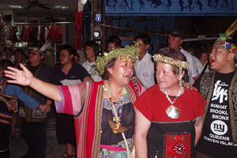
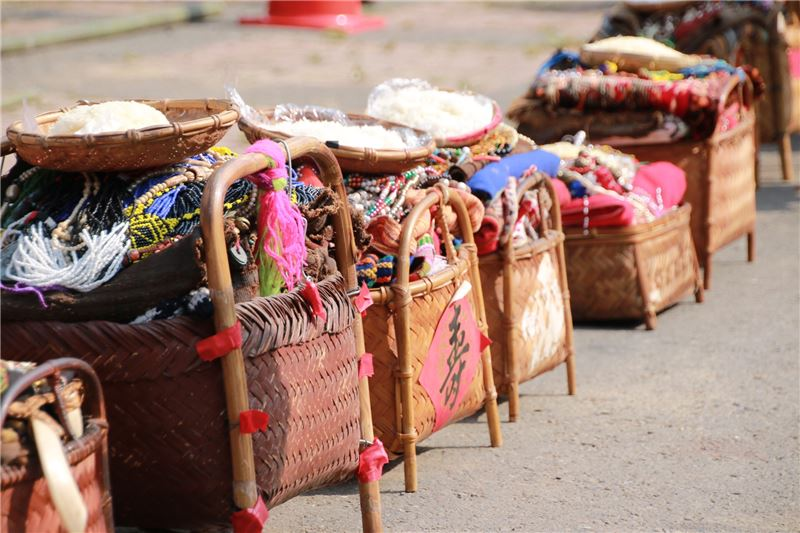
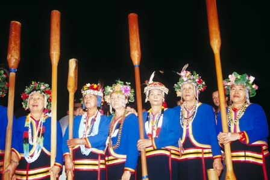

邵族

1 區域：
聚居於南投縣日月潭及雨社山一帶。邵族會與南投縣信義鄉濁水溪流域的潭南、地利、雙龍等村之布農族卡社群人合作並通婚，有些邵語會借自卡群布農語。卲族曾經是水沙連地區最有勢力的族群。水社(kankwan/水沙連)是日治時期的主要聚落之一。現在則以伊達邵（Baraw-baw，日月村，舊稱德化社）為中心。另一主要的聚落為位於水里鄉頂崁村的雨社山聚落。少部分居住於水里民和村益則坑(Aksa)一帶，其餘族人散居於各地。
2 文化：
邵族的服飾上使用大量的幾何形花紋。此外，邵族人以匏木手藝為人稱道，可以製作出一般木臼、木杵、湯匙等日常物件，還可以匏木製造獨木舟。
邵族人將祖靈信仰實體化，創造出「公媽籃」，也稱之為「祖靈籃」。籃中盛放的是祖先遺留下來的衣服、飾品、珠寶，年代越久遠則放在越上層，藉以代表祖靈的住所。邵族的每一戶都會有一只「祖靈籃」，通常擺置在神桌上或離地約兩公尺的壁上。
3 傳統宗教：
邵族的傳統宗教為祖靈信仰，他們相信，人死後會成為祖靈的核心機制，認為祖靈能驅惡賜福，個人的生命週期以及社內各項的時序歷程，都必須透過祖靈來渡過與完成，因此，告知祖靈，就成為邵族人日常生活中最重要的一個課題。邵族人每一年都有許多繁複的儀式活動，除了部落的歲時祭儀之外，小到買冰箱、電視，大到喜慶婚喪，都必須請女性祭司「先生媽（shinshi）」來家中舉行儀式，目的就是要告訴祖靈，家中的一切變化，由此可知，祖靈深切地影響著邵族人的生活。




小測驗時間
1.請問下列何者 "不是" 邵族聚集過的地方?
2.請問除了部落的歲時祭儀之外，小到買冰箱、電視，大到喜慶婚喪，都會請誰到家中舉行儀式?
https://zh.wikipedia.org/wiki/%E9%82%B5%E6%97%8F
http://kids.tacp.gov.tw/home01-4.htm
http://www.tipp.org.tw/aborigines_info.asp?A_ID=7
http://www.moc.gov.tw/information_250_38353.html
http://www.knowlegde.ipc.gov.taipei/ct.asp?xItem=1001654&CtNode=17018&mp=cb01
http://www.tacp.gov.tw/home02.aspx?ID=$3091&IDK=2&EXEC=L